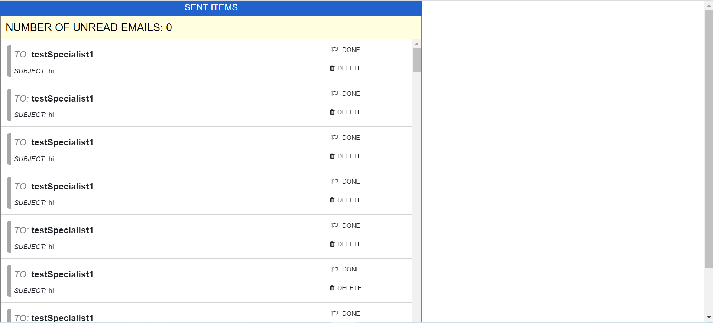

This the first page a user sees when accesing their email. The user will
see a message displaying the number of unread emails.
Emails that
have not been opened are yellow, while the ones that were are white. When you
scroll down to the bottom of the
page you see four buttons: Sent items, Compose, Help desk
and Log out. The function of these buttons will be explained further below.
When user selects the button Sent Items, the page displays all the emails that the user has emailed.
Select this button when you are ready to email someone.
After selecting the Compose button the user is brought over to another page where the user is questioned
the email will be formal or informal.
Hovering the mouse over either of the two options gives a brief
example of who that email would be for.
Formal emails are for people you do not have a personal relationship
with. Examples would include:
When this button is selected a new window is opened listing the various you may need help in.
Select an of the options that you are confused about.
When this button is selected a message box appears, clarifying if your are sure you want to log out.
Hit "OK" or "Cancel". If you select "OK" then you will be taken back to the login page.
Otherwise, you will remain on the current page.